ii. Primer paso - batir el huevo
iii. Segundo paso - añadir la leche
iv. Tercer paso - añadir el azúcar
v. Cuarto paso - añadir el azúcar
vi. Quinto paso - añadir la canela
vii. Sexto paso - mezclarlo todo
viii. Séptimo paso - poner mantequilla en la sartén
ix. Octavo paso - Mojar pan en la mezcla y calentarlo
x. Último paso - Servir las tostadas
| Ingrediente | Cantidad | Imagen |
|---|---|---|
| Leche | 5 cucharadas | 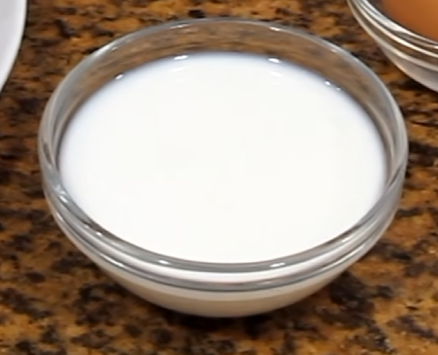 |
| Huevos | 1 | 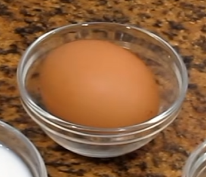 |
| Mantequilla | 1 cucharada | 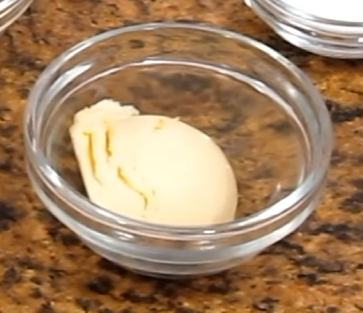 |
| Azúcar | 1 cucharada | 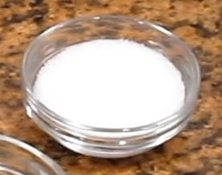 |
| Sal | 1 pizca | 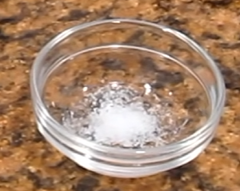 |
| Canela | A gusto | 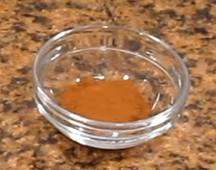 |
Rompe el huevo en un recipiente hondo, introduce un tenedor y realiza movimientos enérgicos de abajo hacia arriba para introducir aire. Continúa batiendo durante unos 30 segundos hasta que la clara y la yema se integren por completo y quede una mezcla homogénea.
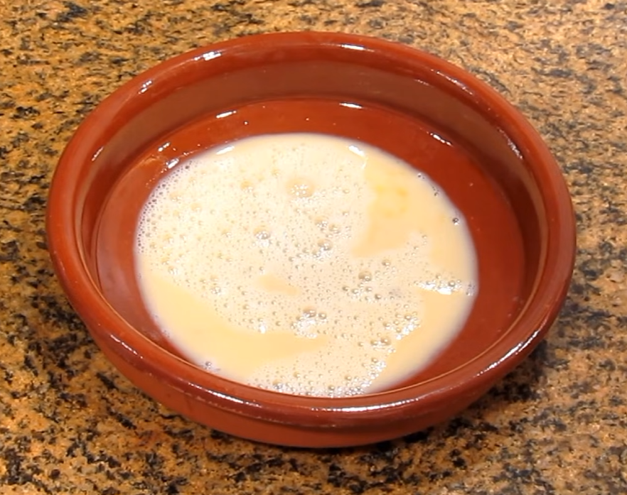
Mide la leche y viértela directamente en el recipiente sobre el huevo batido sin tocar nada más. Déjala caer con cuidado en el bol hasta completar el paso.
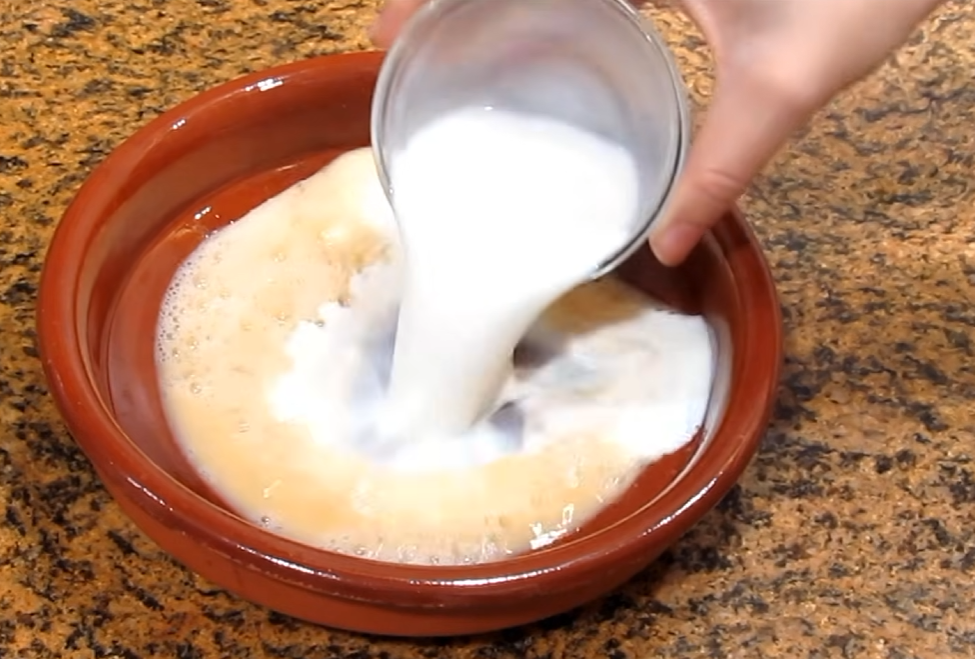
Vierte el azúcar dentro del bol.
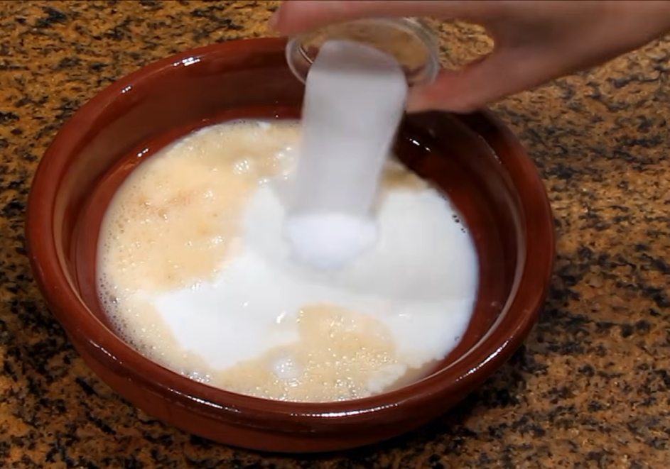
Vierte la sal dentro del bol.
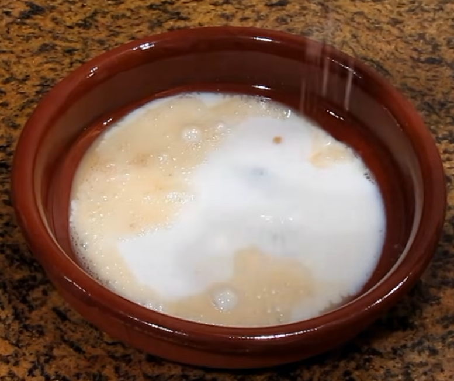
Vierte la canela dentro del bol.
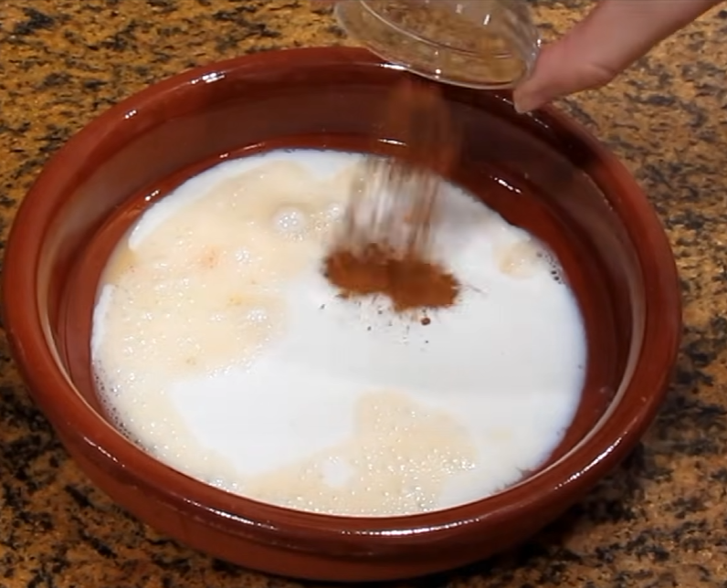
Mezcla todos los ingredientes con un tenedor.
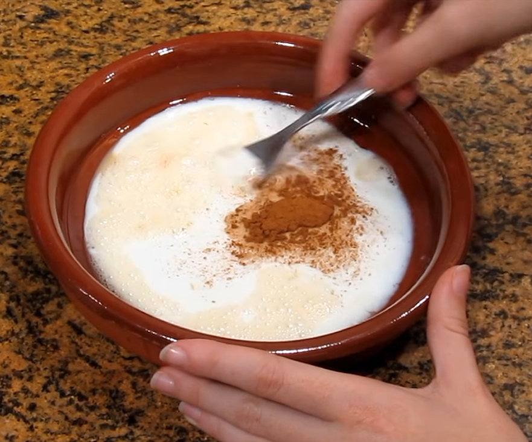
Pon mantequilla en la sartén y caliéntala a fuego medio-alto.
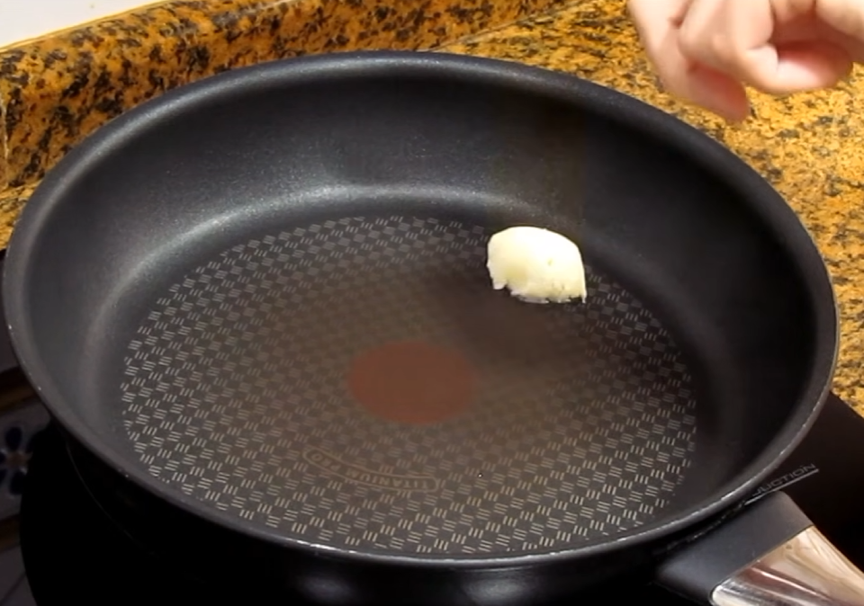
Moja el pan en la mezcla, ponlo en la sartén y dale la vuelta cuando se haga por una cara.
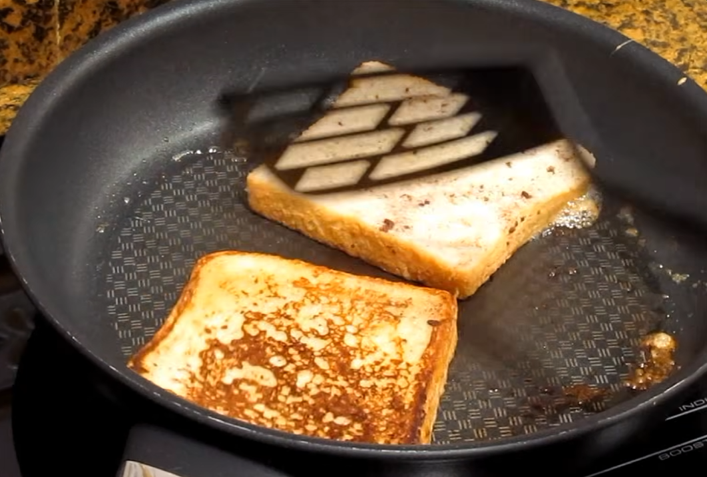
Sirve las tostadas en un plato y compártelas o disfrútalas acompañadas de sirope de arce o miel.
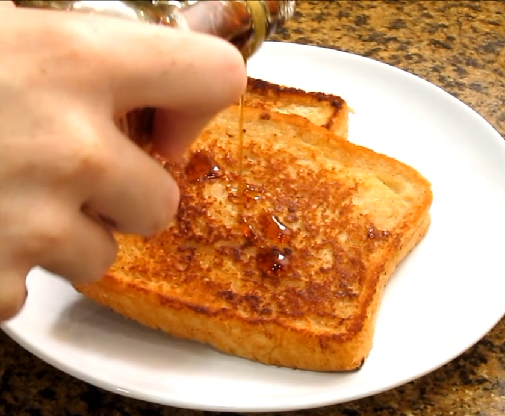
Receta sacada del canal "Cocina Para Todos".